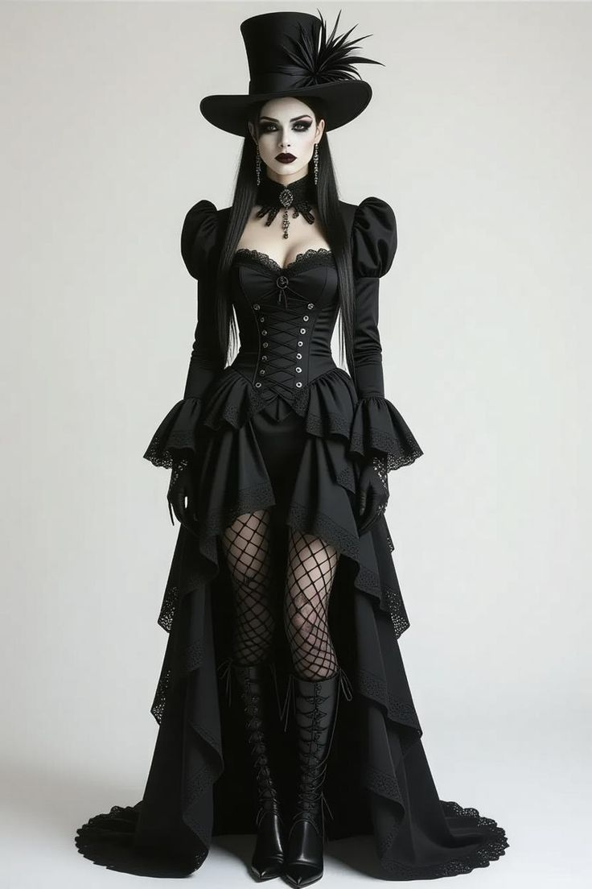
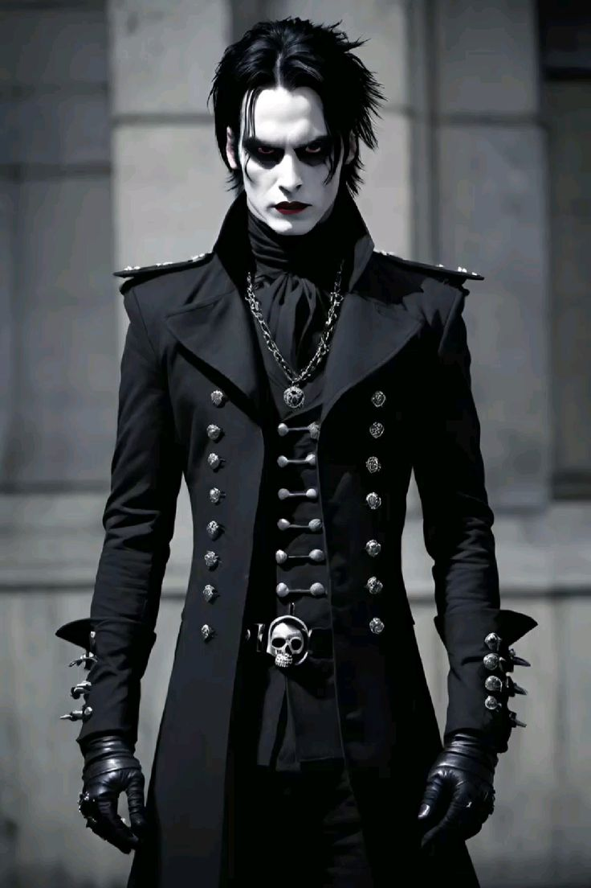
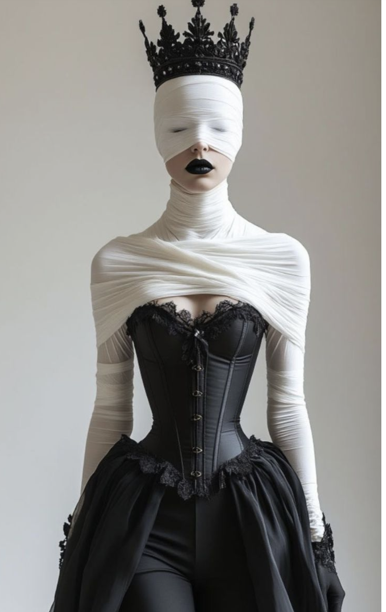
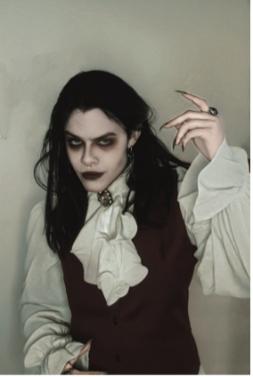

01Romantisk
Romantic Gothic
Blonder, fløjl, lange lag og bløde, dramatiske former.
Dresscode / Halloween 2026
Blonder, sort tøj, dramatiske detaljer og en smule mystik. Dresscoden er gothic – du bestemmer selv, hvordan du gør stilen til din.
01 / Farver & materialer
Start med sort, og byg lag på med tekstur. Hvid og sølv kan bruges som kontrast – det er detaljerne, der sætter stemningen.
02 / Find dit look

Blonder, fløjl, lange lag og bløde, dramatiske former.

Sort skjorte, mørk blazer, støvler og klassiske snit.

Rene silhuetter, læderlook og metal som kontrast.
03 / Sådan sammensætter du et look
Gothic handler om helhedsindtrykket. Brug noget, du allerede har, og byg videre med et par markante detaljer.

Sort tøj, mørke bukser, en kjole eller en skjorte.
Fløjl, blonder, mesh eller læderlook skaber dybde.
Sølvfarvede smykker, støvler, bælter eller et slør.
Mørke øjne eller læber, hvis du har lyst – makeup er valgfrit.
Dresscoden er gothic, men stilen har mange udtryk. Vælg et outfit, du føler dig godt tilpas i.
Se, hvad der venter dig til festen den 31. oktober.